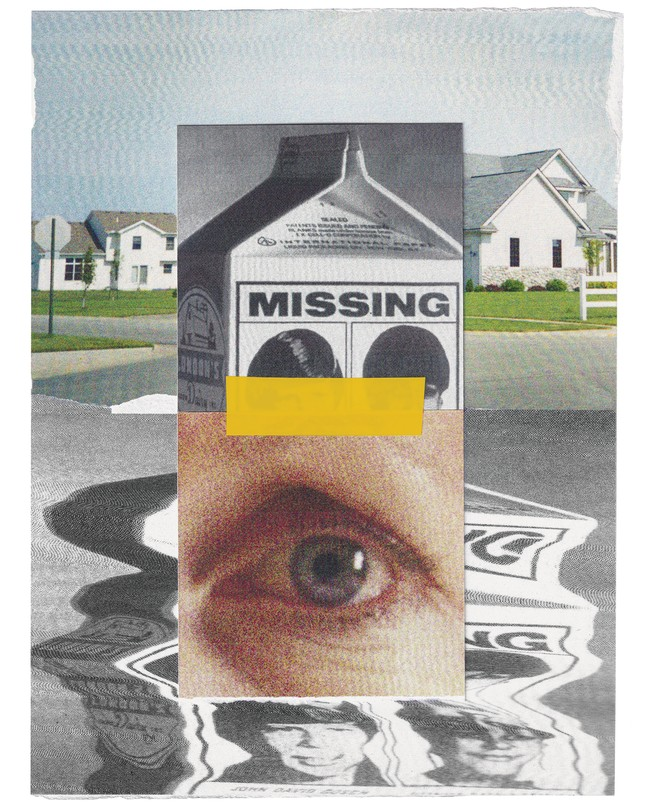
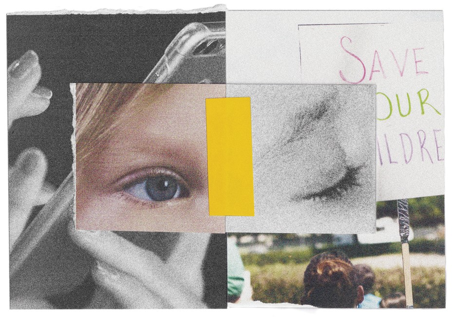
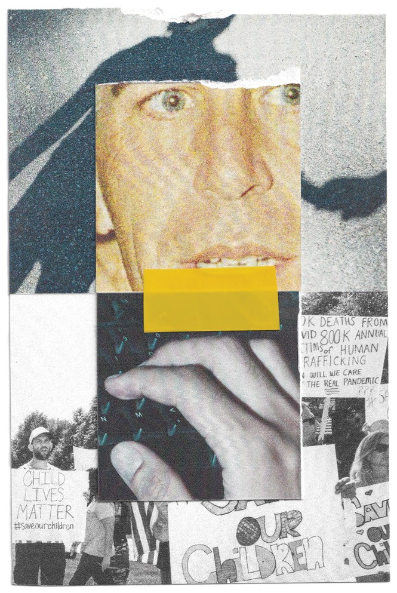

| 上一项 | 文章 | 章节 | 下一项 |
The Great (Fake) Child-Sex-Trafficking Epidemic
Dispatches from a moral panic
by Kaitlyn Tiffany

A poster in the window of Cahoots Corner Cafe—great potatoes, good coffee—advertised a family event at the Oakdale, California, rodeo grounds. There would be food trucks, carnival games, live music, a raffle, and the opportunity to support the cause of “freeing child sex slaves.”
The event, called the Festival of Hope, was a fundraiser for the anti-child-sex-trafficking group Operation Underground Railroad, which was founded in Utah in 2013 and has achieved immense popularity on social media in the past year and a half, attracting an outsize share of attention during a new wave of concern about imperiled children. It is beloved by parenting groups on Facebook, lifestyle influencers on Instagram, and fitness guys on YouTube, who are impressed by its muscular approach to rescuing the innocent. (The nonprofit group is known for taking part in overseas sting operations in which it ensnares alleged child sex traffickers; it also operates a CrossFit gym in Utah.) Supporters commit to “shine OUR light”—the middle word a reference to the group’s acronym—and to “break the chain,” which refers to human bondage and to cycles of exploitation.
Oakdale, a small city near Modesto, is set among ever-dwindling cattle ranches and ever-expanding almond farms. By 9:30 a.m. on a Saturday in late summer, more than 100 booths lined the perimeter of the rodeo arena. Vendors sold crepes and jerky and quilts and princess makeovers and Cutco knives. (They paid a fee to participate, a portion of which went to OUR, as did the proceeds from raffle tickets.) Miniature horses with purple dye on their tails were said to be unicorns. A man with a guitar played “Free Fallin’ ” and then a twangier song referring to alcohol as “heartache medication,” which was notable only because it was so incongruously depressing; everyone else was enjoying a beautiful day in the Central Valley. The air was filled with the perfect scent of hot dogs, and with much less wildfire smoke than there had been the day before.
At the OUR information booth and merchandise tent, stickers and rubber Break the Chain bracelets were free, but snapback hats reading Find Gardy—a reference to a Haitian boy who was kidnapped in 2009—cost $30. Shellie Enos-Forkapa had planned the day’s event with help from three other Operation Underground Railroad volunteers, two of whom she had originally met through the local parent-teacher association. She was wearing an official Festival of Hope Benefiting Operation Underground Railroad T-shirt and earrings shaped like red X’s, a symbol often paired with the anti-trafficking hashtag #EndItMovement. “Oakdale has been so welcoming,” Enos-Forkapa told me. “They’re behind the cause.”
The women were busy dealing with festival logistics, but during a brief lull another volunteer, Ericka Gonzalez, drew me over to a corner of the tent to show me a video on her phone, which she thought might be called “Death to Pedos” but wasn’t. It was called “Open Your Eyes,” and Gonzalez pulled it up in the Telegram messaging app. “From the time we were little kids we revered the rich and famous,” the voice-over began, as images of celebrities and of battered children flashed on the screen. As I started to take notes, she pulled the phone away and wondered aloud if she had done something she shouldn’t have.
I watched the rest of the video a few minutes later, on my own phone. “We are digital soldiers, fighting the greatest war the world has never seen,” the voice-over explained. The bad guys: Barack Obama, Ellen DeGeneres, Lady Gaga, Chuck Schumer, Tom Hanks, Oprah Winfrey, Hillary Clinton. The good guys, a much smaller team: Donald Trump, Ivanka Trump, Barron Trump, Jesus, and an unidentified soldier holding a baby swaddled in an American flag. And, by implication, me, the viewer. “Our weapon is truth,” the voice-over continued as music swelled in the background. “We’ll never give up, even if we have to shake everyone awake one by one.”
The suddenly ubiquitous #SaveTheChildren posts created the illusion of an organic movement rising up to confront a massive social problem.
The provenance of the video was unclear—it was not affiliated with Operation Underground Railroad and bore no resemblance to the official materials its volunteers had been handing out—but the term digital soldier rang a bell. It was a reference to a QAnon conspiracy theory that emerged in 2017 on an out-of-the-way message board and describes Donald Trump as a lone hero waging war against a “deep state” and a cabal of elites who are pedophiles and child murderers; these conspirators will soon be exposed—and perhaps brutally executed—during a promised “storm.” Notably, the video isn’t asking for money, and isn’t presenting an argument. It’s more like a daily devotional for people who already believe in its premise, or something like it.
Anxiety about the nation’s children, which is at a steady simmer in the best of times, boiled over in the summer of 2020, when the digital soldiers of QAnon occupied the otherwise innocuous hashtag #SaveTheChildren. Around the same time, major social-media platforms had started blocking overt QAnon accounts and hashtags. From their new beachhead, the digital soldiers were able to disseminate a cascade of false information about child trafficking on Instagram and Facebook: Children were being trafficked on the hospital ship USNS Comfort, then docked in New York City, and through tunnels underneath Central Park.
As outrageous as these allegations were, their timing may have made them sound less fantastical to some. They coincided with the release of popular documentaries about the real sex-trafficking crimes allegedly committed by Jeffrey Epstein, the disgraced financier who was arrested in July 2019 and committed suicide that August, and who was known for his wide circle of rich and famous acquaintances. (His death had set off a new slew of conspiracy theories.) In this context, the suddenly ubiquitous #SaveTheChildren posts created the illusion of an organic movement rising up to confront a massive social problem. Americans who knew little about QAnon became heavily involved, and when QAnon moved on to other concerns—a stolen election, a poisonous vaccine—these volunteers stayed devoted to the cause of opposing child sex trafficking.
Today, buying a raffle ticket to support this effort feels as natural to many people as picking up a Livestrong bracelet at a car-wash cash register did 15 years ago. Small businesses sponsor fundraisers. Happy couples add Operation Underground Railroad donation links to their online wedding registries. All over the country, community volunteers promote awareness of child sex trafficking: In Colorado, at a Kentucky Derby party. In Arkansas, at an Easter bake sale. In Texas, at a “Big A$$ Crawfish Bash.” In Idaho, at a Thanksgiving-morning “turkey run.” In Utah, at an annual winter-holiday fair.
In some ways, this is just the most recent expression of a fear that has been part of the American landscape since the early 20th century—roughly the moment, as the sociologist Viviana Zelizer has argued, when children came to be viewed as “economically useless but emotionally priceless.” As in previous moral panics, messages about the threat of child sex trafficking are spread by means of friendly chitchat, flyers in the windows of diners, and coverage on local TV news.
But the present panic is different in one important respect: It is sustained by the social web. On Facebook and Instagram, friends and neighbors share unsettling statistics and dire images in formats designed for online communities that reward displays of concern. Because today’s messaging about child sex trafficking is so decentralized and fluid, it is impervious to gatekeepers who would knock down its most outlandish claims. The phenomenon suggests the possibility of a new law of social-media physics: A panic in motion can stay in motion.
Listen to an interview with William J. Walker, sergeant-at-arms of the U.S. House of Representatives, on The Experiment.
Listen and subscribe: Apple Podcasts | Spotify | Stitcher | Google Podcasts
“PEDOPHILES CAN BE ANYONE,” Laura Pamatian, at the time a Palm Beach–based volunteer team leader for Operation Underground Railroad, wrote on Facebook in June. “They look just like you and me. They work with us … they sit next to us at our favorite restaurant … they are shopping with us at the grocery store.” To raise awareness, and funds, for Operation Underground Railroad, Pamatian helped organize a statewide motorcycling event. “It’s about saving children who are being raped and abused by pedophiles 10, 20, 30 times a day!” she wrote. “And I don’t say that to sensationalize the topic, I say it because it’s TRUE and it’s happening and NO ONE is talking about it!” Her volunteer chapter claimed that “upwards of 300,000” children are victims of sex trafficking in the United States every year.
All over the country, well-meaning Americans are convinced that human trafficking—and specifically child sex trafficking—is happening right in their backyard, or at any rate no farther away than the nearest mall parking lot. A 2020 survey by the political scientists Joseph Uscinski and Adam Enders found that 35 percent of Americans think the number of children who are victims of trafficking each year is about 300,000 or higher; 24 percent think it is “much higher.” Online, people read that trafficking is a problem nobody else is willing to discuss: The city they live in is a “hot spot,” their state one of the worst in the country. Despite what the mainstream media are saying, this is “the real pandemic.”
Of course, child sex trafficking does happen, and it is horrible. The crime is a serious concern of human-rights organizations and of governments all over the world. Statistically, however, it is hard to get a handle on: The data are often misleading, when they exist at all. Whatever the incidence, sex trafficking does not involve Tom Hanks or hundreds of thousands of American children.
Read: When sex trafficking goes unnoticed in America
When today’s activists talk about the problem of trafficking, knowing exactly what they’re referring to can be difficult. They cite statistics that actually offer global estimates of all forms of labor trafficking. Or they mention outdated and hard-to-parse figures about the number of children who go “missing” in the United States every year—most of whom are never in any immediate danger—and then start talking about children who are abducted by strangers and sold into sex slavery.
Today’s messaging on social media about child sex trafficking is impervious to gatekeepers who would knock down its most outlandish claims.
While stereotypical kidnappings—what you picture when you hear the word—do occur, the annual number hovers around 100. Sex trafficking also occurs in the United States. The U.S. National Human Trafficking Hotline has been operated by the anti-trafficking nonprofit Polaris Project and overseen and partially funded by the Department of Health and Human Services since 2007. In 2019, it recorded direct contacts with 14,597 likely victims of sex trafficking of all ages. (The average age at which these likely victims were first trafficked—“age of entry,” as the statistic is called—was 17.) The organization itself doesn’t regard its figure for direct contacts as one that should be used with too much confidence—it is probably low, but no more solid data exist.
Read: Exchanging sex for survival
There is a widely circulated number, and it’s even bigger than the one Laura Pamatian and her volunteer chapter publicized: 800,000 children go missing in the U.S. every year. The figure shows up on T-shirts and handmade posters, and in the captions of Instagram posts. But the number doesn’t mean what the people sharing it think it means. It comes from a study conducted in 1999 by the Justice Department, and it’s an estimate of the number of children who were reported missing over the period of a year for any reason and for any length of time. The majority were runaways, children caught up in custody disputes, or children who were temporarily not where their guardians expected them to be. The estimate for “nonfamily abductions” reported to authorities was 12,100, which includes stereotypical kidnappings, but came with the caveat that it was extrapolated from “an extremely small sample of cases” and, as a result, “its precision and confidence interval are unreliable.” Later in the report, the authors noted that “only a fraction of 1 percent of the children who were reported missing had not been recovered” by the time they were counted for the study. The authors also clarified that a survey sent to law-enforcement agencies found that “an estimated 115 of the nonfamily abducted children were victims of stereotypical kidnapping.” The Justice Department repeated the study in 2013 and found that reports of missing children had “significantly decreased.”
Plenty of news outlets have pointed out how misleading the 800,000 figure is. Yet it has been resilient. It appeared on colorful handmade posters at hundreds of Save the Children marches that began taking place in the summer of 2020, many of which were covered credulously by local TV news. Narrating footage of a march in Peoria, Illinois, a reporter for the CBS affiliate WMBD did not mention the QAnon hashtags on some of the signs and passed along without comment information from the organizer, Brenna Fort: “Fort says her research shows that at least 800,000 children go missing every year.” The segment ended by zooming in on a plastic baby doll wearing a cloth diaper on which someone had written NOT FOR SALE in red marker.
The last moral panic centered on widespread physical dangers to America’s children began in the early 1980s. Several high-profile and disturbing stories became media spectacles, including the 1981 murder (and then beheading) of 6-year-old Adam Walsh, who was abducted from a Sears department store in Hollywood, Florida. The Adam Walsh story was made into a TV movie that aired on NBC in October 1983, the same year that the 1979 disappearance of 6-year-old Etan Patz was fictionalized in the theatrically released movie Without a Trace.
Adam’s father, John Walsh, who later spent more than two decades as the host of America’s Most Wanted, claimed that 50,000 children were abducted “for reasons of foul play” in the United States every year. He warned a Senate subcommittee in 1983: “This country is littered with mutilated, decapitated, raped, strangled children.” In response, Congress passed two laws—establishing a nationwide hotline and creating the National Center for Missing and Exploited Children. The panic prompted the building of shopping-mall kiosks where parents could fingerprint or videotape their children to make them easier for police to identify. According to the sociologist David Altheide, it also led to the advertising of dental-identification implants for people who did not yet have their permanent teeth, as well as the creation of a cottage industry of missing-child insurance to cover the cost of private detectives in the event of an abduction. As a 1986 story in The Atlantic recounted, the nonprofit National Child Safety Council printed photos of missing children on 3 billion milk cartons; a person would have had to be paying close attention to notice that all the photos were of the same 106 faces. (The photos also appeared on grocery bags, Coca-Cola bottles, thruway toll tickets, and pizza boxes.) “Ordinary citizens may have encountered explicit reminders of missing children more often than for any other social problem,” the sociologist Joel Best wrote in 1987.
“You know how they used to have the kids on the milk cartons?” one mother told me. “That wouldn’t even be a possibility now … There’s not enough milk cartons.”
The fear of stranger abduction was partly a product of the cultural environment at the time. “Family values” political rhetoric drove paranoia about the drug trade, pornography, and crime. Second-wave feminism had encouraged more women to enter the workforce, though not without societal pressure to feel guilt and anxiety about leaving their children at home alone, or in the care of strangers. The divorce rate was rising, and custody battles were becoming more common, leading to the complicated legal situation of “family abduction,” or “child snatching.”
Yet there was still a backstop, a way for the panic to end. The Denver Post won a Pulitzer Prize for its 1985 story laboriously debunking the statistics that had caused such widespread alarm. The actual number of children kidnapped by strangers, according to FBI documentation, turned out to be 67 in 1983, up from 49 in 1982. A two-part PBS special explained the statistics and addressed the role that made-for-TV movies and media coverage had played in stoking the fire; a study conducted in 1987 by Altheide and the crime analyst Noah Fritz found that three-quarters of viewers who had previously considered “missing children” a serious problem changed their minds immediately after watching it. With the arrival of better information, the missing-children panic faded.
Read: When bad news was printed on milk cartons
But decades later, fears have flared again. “You know how they used to have the kids on the milk cartons way back in the day?” Jaesie Hansen, a Utah-based mother of four who sells Operation Underground Railroad and #SaveOurChildren decals on Etsy, asked me in July. “That wouldn’t even be a possibility now, because there’s so many kids. There’s not enough milk cartons to put them on.”
“The government can control a vaccine and a virus, but they can’t control this,” Ashley Victoria, a sixth-grade teacher and designer of rhinestone-covered denim jackets, told me at her booth at the Oakdale festival. The powerful are failing, or the powerful don’t care, or the powerful are part of it all, she suggested. “I am a conspiracy theorist,” she went on, before referencing persistent internet rumors of Hillary Clinton’s involvement in sex crimes committed by Jeffrey Epstein. “I’m not going to sit here and say it’s all true, but it’s going to come out somehow.”
As I looked over a display of hoop earrings decorated with giant pom-poms at a neighboring booth, Victoria chatted with their maker about the supposedly suspicious deaths of the celebrity chef Anthony Bourdain, the fashion designer Kate Spade, and the DJ Avicii. “They were trying to expose Hollywood, and they all committed suicide,” she said. “Mm-hmm.”
The earring designer promised to send Victoria a copy of the 10-part documentary The Fall of the Cabal, which is full of QAnon-related theories and has been scrubbed from social-media and video-hosting platforms but still circulates in group chats and Telegram channels. The conversation then turned to a popular conspiracy theory about the online home-goods retailer Wayfair, which had spread across social media in the summer of 2020. The two of them discussed it excitedly, the way a pair of friends might riff on an underrated TV show or a deep cut from a beloved album. “Nobody talks about it anymore,” the earring designer complained. Victoria countered that she had been talking about it just the other day.

The Wayfair rumor they were referring to had taken flight in response to confusing listings on the retail site; some throw pillows were priced absurdly high due to an error, while industrial-size cabinets appeared overpriced to those with little knowledge of that market. On Twitter, some suggested that the listings were actually for the purchase of children. That notion—that a major American corporation was selling children online, more or less in plain sight—was also discussed in conspiracy forums on Reddit, where it was subsumed into the broader QAnon mythology about a ravenous sex-trafficking cabal. (“There is, of course, no truth to these claims,” a Wayfair spokesperson said at the time.)
QAnon may have catalyzed the spread of the Wayfair speculations, but the story had independent sources of energy. It was passed along by mom influencers who might otherwise post about manicures or nutritional supplements; it was shared among circles of women marketing essential oils or specialty shampoos, and on Instagram, where friends happily reposted one another’s well-designed Stories or infographics. Many of these women, when I spoke with them, emphatically denied supporting QAnon or even having a good understanding of what it was.
Read: Why multilevel marketing and QAnon go hand in hand
Jaesie Hansen, the Etsy seller, traced her interest in the child-sex-trafficking cause to the Wayfair theory, which she had come across mostly because she’d been stuck at home during the pandemic and was spending more of her day on social media. “I have no idea if that was true,” she said. “But I do know that that went viral, and that was when I started to look into it a lot more … If I hadn’t dove deeper into the whole Wayfair scandal last year, I probably wouldn’t have understood how big of a problem [child sex trafficking] actually is.” While Hansen acknowledges that the coronavirus is a serious issue, child sex trafficking around the world seems at least equally serious to her, and she doesn’t feel that it’s receiving adequate attention from the media. “I want to hear as much about that as I do about people dying of COVID,” she said.
Yet the panic and the pandemic are inextricably intertwined. Rumors of child sex trafficking shot across the internet during the months when pandemic shutdown measures were first implemented, a time when parents and children alike found themselves with more opportunities for idle digital browsing and emotion-led sharing. Referring to the dangers of kids being out of school and chattering online all day, Operation Underground Railroad’s founder and president, Tim Ballard, has regularly described this period as a “pedophile’s dream,” and claimed that predators were thinking of it as “harvest time.” The threat of trafficking became a pet cause for anti-vaccine groups that recruit by exploiting every kind of parental concern. (As a Florida state senator noted in August 2020, some in the anti-mask movement falsely claim that “wearing a mask increases the risk of kidnapping and child sex trafficking.”)
The new panic also provided an alternative to the Black Lives Matter protests happening around the country last summer, for those who may not have been sympathetic to that movement or its methods. (One Facebook graphic showed the phrase “Defund the police” altered to read “Defend the children.”) More recently, the panic has intersected with paranoia about immigration and the increase of migrants at the southern border, echoing arguments that a wall between the United States and Mexico would be a humanitarian effort to prevent child trafficking.
Though social-media platforms have made significant progress in removing QAnon from spaces where a well-intentioned person might stumble across it, disproportionate concern about child trafficking has already been absorbed and normalized—sustained by shocking rumors on social platforms (Were children being trafficked on the Walmart app? Were they suffering, hidden, on the container ship Ever Given, stuck in the Suez Canal?) and by word of mouth among circles of trust. This past August, in Magnolia, Texas, a suburb northwest of Houston, Tisha Butler and her family celebrated back-to-school season with a chili cook-off to benefit Operation Underground Railroad, hosted in the front yard of the martial-arts school they own and operate. Butler conducts women’s self-defense workshops every Saturday and invites survivors of domestic violence to take private lessons for free. “I’ve worked with survivors of trafficking,” she told me. “It’s very empowering for someone that survived something like that to learn the skills to protect yourself.” The chili-cook-off teams were mostly local business owners or the parents of students at the dojo; one was a group of moms who had started taking their kids to tae kwon do. Some of them had learned about OUR through Butler and were willing to support the cause because of their belief in her as a person who genuinely cares about helping children and women stay safe.
“We always think, Oh, it’s not me; I live in a good neighborhood; I come from a safe area, but it happens every day,” Butler told me, sitting in her office after a secret round of voting to determine the winner of the cook-off. “If you’re not aware, then you are a prime target.” Like many other volunteers, Butler brought up her own children when discussing her interest in the child-sex-trafficking cause. “Having daughters, imagining them being forced to have sex with 10 to 50 people a day—it’s sickening.”
Amid normal conversations about an understandable worry, startling pieces of misinformation can appear without warning. In July, I attended a benefit motorcycle ride in Clearwater, Florida, organized with the help of a women’s biker group called the Diva Angels. The members meet weekly at a Quaker Steak & Lube, in part to raise awareness about the charity group rides. Rebecca Haugland, a Diva Angel and an OUR supporter, talked with me straightforwardly about her long-standing concern for her son and daughter and, now, her two granddaughters; she’d raised her kids to understand that she’d support them if they spoke up about an adult who was making them uncomfortable, and she wants to help make the state of Florida a better place. “One of the biggest things that’s going on right now,” she also told me, “is the organ harvesting—children’s organs. They’ll take them and feed them and take care of them and raise them for their organs.”
The reliance of the present panic on social media suggests a largely leaderless phenomenon. But Operation Underground Railroad has won out as a favorite of the new activists, and serves as an authority, a common reference point, and a center of gravity. The group was founded by Ballard almost a decade ago, well before the crescendo of interest in child trafficking. In his early career, Ballard says, he spent a short time working for the CIA, then 11 years as an undercover operator and special agent for the Department of Homeland Security, partly as a member of the Internet Crimes Against Children Task Force. (Spokespeople for the CIA and DHS said they could not confirm Ballard’s employment record without his written permission, which he did not provide.) Ballard has frequently explained that he became frustrated with the limitations of American legal jurisdiction and decided to strike out on his own. Operation Underground Railroad would not be confused for a government operation; it quickly made its name conducting sting operations overseas in which Ballard or a colleague posed, often hammily, as an American pedophile. The team coordinated with local law enforcement, then contacted suspected traffickers, arranged a meeting, and lay in wait. When the marks arrived and accepted payment, law enforcement stormed in and arrested the suspects. The entire episode was generally captured on film, and much of the footage has been posted on YouTube or has appeared in feature-length documentaries. (In its early years, the group was known for inviting minor celebrities, including The Walking Dead star Laurie Holden, to participate in rescue operations.)

Illustration by Vanessa Saba. Sources: Davidoff Studios / Getty; Hadi Nurseha / Getty; MRS / Getty; Stephen Maturen / Getty
While no one doubts Ballard’s enthusiasm for the work, critics have questioned the efficacy of OUR’s “raid and rescue” approach, which was popularized in the 1990s by various anti-trafficking NGOs, notably the Christian nonprofit International Justice Mission. Trafficking experts note that, while dramatic, such operations fail to address the complex social and economic problems that create the conditions for trafficking. If the goal is to stamp out international child trafficking, they argue, the raids are of little value. As OUR’s own footage demonstrates, the group’s strategy involves asking targets to bring it the youngest children possible in exchange for large amounts of cash—in other words, potentially provoking the very behavior the group is ostensibly attempting to curb.
In the United States, OUR does not conduct “missions”—it is careful to avoid coming off as a vigilante group—but it does donate money to police departments. The funds are earmarked for child-trafficking-related resources, including dogs trained to sniff out hidden portable hard drives (because they might contain child-sex-abuse material). But as Vice’s Tim Marchman and Anna Merlan detailed in a recent investigation, police departments have not found OUR’s contributions particularly useful. Many of the donations are insubstantial, and one state law-enforcement agency told the reporters that the money wasn’t worth the trouble of being associated with OUR. A more significant challenge to OUR’s reputation: The district attorney of Davis County, Utah, opened a criminal investigation into the organization last year; according to a source close to the investigation, one focus of the probe is on potentially misleading statements made in OUR fundraising materials, including exaggerations about the group’s involvement in arrests made by law enforcement. The Utah attorney general’s office—which had received $950,000 over four years from OUR for a wellness program for personnel in its Internet Crimes Against Children Task Force—cut all ties to the group when it learned of the Davis County investigation. (An Operation Underground Railroad spokesperson declined to answer in detail a list of questions related to its record, and Ballard did not return requests for an interview. With respect to the ongoing Davis County investigation, the organization provided this response: “O.U.R. has not been asked to cooperate with any investigation regarding its business operations but will do so if asked.”)
Still, over the past year and a half, OUR has become the go-to organization to invoke when planning an awareness-raising golf tournament or bake sale or 10-mile truck pull. As John Walsh did in the 1980s, Ballard commands attention with graphic, emotional appeals; he peppers speeches with terms like child rape and pedophiles and bad guys, and apologizes for not apologizing for saying what he means. He is the author of several books, including one arguing that Abraham Lincoln was able to win the Civil War because he had read the Book of Mormon. (Ballard is himself a Mormon.) Fans regard him as an action hero: a real-life Batman, or a real-life Captain America. These are natural comparisons, because Ballard is charismatic and physically imposing—his extreme biceps, extreme blue eyes, and extreme bleach-blond hair represent a notable update of Walsh’s furrowed brow and Joe Friday cadence. “He’s just a badass,” Rhandi Allred, a Utah mother of five, told me. “When I grow up, I want to be like Tim Ballard.”
Ballard is now a celebrity with a national fandom. In his capacity as OUR’s founder, he was invited by President Trump to join a White House anti-trafficking advisory board. He has been the CEO of Glenn Beck’s Nazarene Fund, which purports to rescue Christians and other religious minorities overseas from captivity and refugee camps. He has been befriended by the Pittsburgh Steelers head coach, Mike Tomlin, who wrote the foreword for Ballard’s 2018 book, Slave Stealers. OUR’s annual fundraising has risen steadily with its founder’s profile, from $6.8 million in 2016 to $21.2 million in 2019, the last year for which tax records are available.
At the end of July, Ballard was the star of Operation Underground Railroad’s second annual Rise Up for Children event, for which volunteer teams across the country organize marches and fundraisers. He spoke during a concert held in Lehi, Utah, which I watched via a livestream available on YouTube. The comments section quickly filled with heart and prayer-hand emoji. Onstage, he announced that OUR would soon be releasing another documentary, about its rescue missions in Colombia, and then played the trailer, which was cut like an action thriller—guns, beaches, boats, a crack of thunder, the puff of a cigar. “There are people out there who would mock us and point at us, ‘Oh, you’re just trying to be famous,’ ” Ballard said after it finished, “those with other agendas that would put obstacles in our way to rescue children, which is absolutely insane to me.”
Ballard clearly relishes the role of the hero, and he cannily repays his followers for their admiration. Their participation in the cause is framed as itself heroic, even historic. At the Rise Up concert, Ballard explained to the audience that the abolitionist movement of the 19th century had been driven by people just like them. “They got loud. Then they got louder. Then they got so loud that it reached the ears of leaders like President Abraham Lincoln.” For a monthly $5 donation, OUR boosters can earn the designation “abolitionist”; missing children are pointedly described as victims of “modern-day slavery.” This, too, seems to provide relief for supporters who may take issue with the Black Lives Matter movement but still yearn to be on the right side of history.
What does it mean that a deluded understanding of child trafficking is now the pet cause of the local florist and law firm and mortgage brokerage?
Another key to OUR’s appeal is its capacious attitude toward truth. After the Wayfair conspiracy theory surfaced, dozens of anti-trafficking organizations signed an open letter stating that “anybody—political committee, public office holder, candidate, or media outlet—who lends any credibility to QAnon conspiracies related to human trafficking actively harms the fight against human trafficking.” Operation Underground Railroad was conspicuously not among the signatories. Rather than dispel the Wayfair rumor, Ballard flirted with it. In July 2020, he posted an Instagram video in which he spoke directly to the camera while an American flag rippled behind his right shoulder. “Children are sold that way,” he said. “For 17 years, I’ve worked as an undercover operator online. No question about it, children are sold on social-media platforms, on websites, and so forth.” The video has been viewed more than 2.7 million times.
This August, a spokesperson for Operation Underground Railroad wrote in an email: “O.U.R. does not condone conspiracy theories and is not affiliated with any conspiracy theory groups, like QAnon, in any way, shape, or form.” Yet Ballard himself seems at home in this milieu. A forthcoming Ballard biopic, Sound of Freedom, will star Jim Caviezel, the actor who played Jesus in The Passion of the Christ. In the spring, Caviezel appeared at a “health and freedom” conference alongside various right-wing figures—including L. Lin Wood, a lawyer and key architect of the 2020 election-fraud conspiracy theories, and Mike Lindell, the MyPillow founder and a major Trump donor, who famously tried to pitch the former president on a COVID-19 miracle cure made from a highly poisonous shrub. Video of Caviezel’s speech was shared by OUR supporters on YouTube and Facebook. In it, Caviezel told the audience that Ballard had planned to come with him for the interview but was unable to attend, because he was “pulling kids out of the darkest recesses of hell right now.” He then explained how adrenaline can be harvested from children’s bodies as they scream and die.
The sociologist Stanley Cohen coined the term moral panic in his 1972 book Folk Devils and Moral Panics. Cohen presented panics as intense but temporary—specifically, as “spasmodic.” (His interest in the phenomenon was piqued by an overreaction, on the part of the British media, to youth subcultures that favored motorcycle jackets and beachside fistfights.) He posited that moral panics run out of steam because people get bored; or they go out of fashion, like a cut of pants or a type of salad; or it becomes clear that the instigators are crying wolf; or whatever they’re saying is accepted as a fact that most people can live with.
Yet even fleeting moral panics can have lasting consequences. The white-slavery panic of the early 1900s led to the passage of the Mann Act—a law that criminalized transporting across state lines “any woman or girl for the purpose of prostitution or debauchery.” It was wielded against Black men who traveled with white women, and later against sex workers who were accused of trafficking themselves. The 1980s hysteria about child sex abuse preceded the Child Protection and Obscenity Enforcement Act, which made sharing child-sex-abuse material over a computer illegal, but also broadened the list of crimes for which the government could obtain wiretaps. Today, the difficult problem of child-sex-abuse material on the internet is being offered as a rationale for law enforcement to obtain backdoor access to encrypted communication, or for Congress to obligate social-media companies to constantly surveil their users’ posts and private messages.
A panic can leave a mark even if it falls short of changing the law. Among other things, as Cohen wrote, it can change “the way the society conceives itself.” What does it mean that a deluded understanding of child trafficking is now the pet cause of the local florist and law firm and mortgage brokerage and foam-insulation contractor? What does it mean if American communities are cleaved along a neat divide, separating those who see themselves as caring about the lives of children from those who, because they reject the conspiracy theories and inflated numbers, apparently do not?
And what does it mean if a moral panic doesn’t prove to be spasmodic? Cohen floated the idea of “a permanent moral panic resting on a seamless web of social anxieties,” then swatted down his own suggestion, pointing out that permanent panic is an oxymoron. Cohen died in 2013 and never had the opportunity to consider the way the internet gives each of us the power to take on work as champions of morality and marketers of fear. His analysis of prior panics can tell us only so much about what to expect from this one.
I don’t want to panic about a panic. Not all, or anywhere close to all, of the organizers or attendees of events like the Festival of Hope are invested in the issue of child sex trafficking because of sinister rumors they’ve heard or inflated statistics they’ve repeated. Many of them are expressing casual support for an obviously correct moral position—the same way you might buy a brownie to help homeless vets or drop a canned good in a collection box to help poor families. Most of the people I met were simply happy to support “anything to do with kids” or “goodness in the world,” which they seemed to feel was in short supply. They were warm and friendly, the kind of people you’d hope to have around if you got a flat tire or had a fainting spell.
If there was a sentiment that almost everyone shared, it was that child trafficking is a disgusting problem at any scale, and that ignoring it speaks ill of us all. The undeniable truth of that statement points to another reason this panic may not soon recede. There are too many issues on which Americans can’t agree, such as how (or whether) to manage a deadly pandemic and how (or whether) to confront racism. But one type of justice isn’t complicated, and one definition of freedom is clear. If children are disappearing from all over the country, how could we possibly think about anything else?
This article appears in the January/February 2022 print edition with the headline “The Children Are in Danger!”
This article was downloaded by calibre from https://www.theatlantic.com/magazine/archive/2022/01/children-sex-trafficking-conspiracy-epidemic/620845/
| 上一项 | 文章 | 章节 | 下一项 |